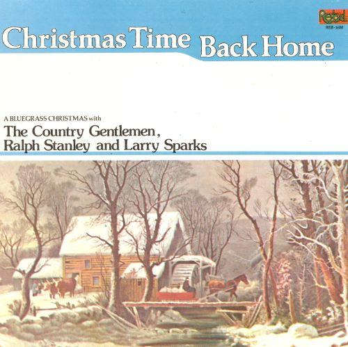

3 min read

It seems to me that the eternal promise of Christmas is to restore for us a certain unbroken wholeness. This wholeness can take on many appearances, but this song certainly nails one of them for me: a feeling of returning to a family home, isolated from our usual cares, but still connected to something larger than ourselves.
“Christmas Time Back Home” was originally performed by the progressive bluegrass group The Country Gentlemen, and recorded for Rebel Records. It was released as part of an album by the same name, featuring several selections from The Country Gentlemen as well as other bluegrass artists from Rebel's stable.
The words and music were composed by Ann Streeter. The words are simple, but paint a series of compelling images for us.
Back up in the mountains, in the old home town of mine,
There's not a brighter time of year than that of Christmas time.
The bells in the little church, they all begin to chime,
Telling all for miles around, “Rejoice! It’s Christmas time!”Christmas bells are ringing, I hear them chime so sweet.
The carolers are singing, I hear them in the street.
Outside the white snow falling, inside my heart I find,
A world of joy and peace on earth back home at Christmas time.A candle in each window, they give a golden glow,
While out among the shimmering pines lights sparkle in the snow.
And through the lonely mountaintops the wind's shrill echoes cry,
For peace on earth, good will toward men, and faith that will not die.High above our little town, so bright to be so far,
There shines upon the whole wide world His gift our guiding star.
Everyone in each home can feel a peace sublime,
And know the joy the Yuletide brings to all at Christmastime.
There are several covers of this song, but The Country Gentlemen deliver the definitive version. The lead and harmony vocals, the sparkling banjo, the lively mandolin, the lightly tripping acoustic bass, the bells (unlikely instruments, even for “newgrass”) all combine for a perfect rendition. I especially appreciate the light and tender touch on the lead vocal, never trying to overpower the listener, but full of quavering emotion.
It's hard for me to write about this one without feeling tears come to my eyes. My father saw The Country Gentlemen perform in and around Washington DC during their early years, and at times partied with Charlie Waller on my Dad's boat. I never saw or met the band, but spent many hours listening to them on record with my father. The names of Charlie Waller, John Duffey and Eddie Adcock were heard often in my father's house, as was their music.
It is my mother's home in Virginia, though, that appears to me most often when I hear this song. She was not in the hills, but in most other respects her small rural community near the Rappahannock River matches the home described in the song.
My Dad's ashes have long ago been spread over a lake in Northern California, and my Mom now lies buried in the graveyard adjacent to that little church she attended faithfully for years, but this song still evokes for me those wonderful memories of being home with them for the holidays.
Next: “Please Come Home for Christmas”
Or see the complete list of "Christmas Favorites from The Practical Utopian.